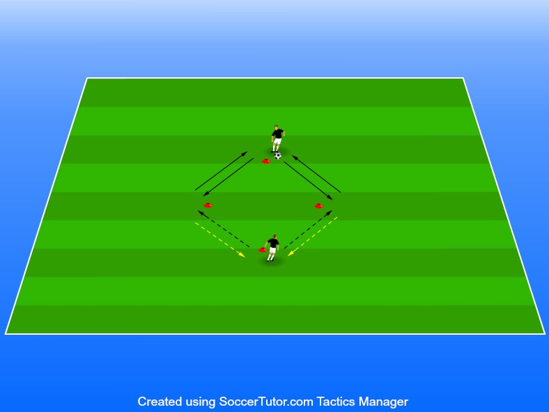

Passning, mot och medtagningar
yta är ca 3 m mellan varje kon
2 spelare per uppställning
1 boll
4 koner
Passning på tillbaka på ett tillslag.
Mottagning med bröst/lår/huvud/axel och sedan passning tillbaka
Volleypass med både bredsida och vrist.
Nick tillbaka.
Tränare får gärna sin kreativitet så att de bemästrar
Om ni känner i att spelarna i 11-12 års åldern behöver en ännu
Om ni tränare känner att vändningar ska vara i fokus så kan man
Träna på flera olika vändningar, det finns väldigt många variatio-
A spelar till B utanför höger kon. • 4 koner
B spelar tillbaka till A och löper direkt efter passningen runt den nedersta konen för att få nästa passning vid den vänstra konen.
Mönstret upprepas sedan. Spelarna jobbar alltså varannan gång till vänster kon, varannan gång till höger kon efter att ha rundat den nedersta.
Vid höger kon höger fot, vid vänster kon vänster fot (både i mottag och passning). 5V.ARBIAytT uIOppNgEifRt på spelarna efter ca 1 min och upprepa ett antal gånger. • Passning på tillbaka på ett tillslag. • Mottagning med bröst/lår/huvud/axel och sedan passning tillbaka på marken. • Volleypass med både bredsida och vrist. • Nick tillbaka. • Tränare får gärna sin kreativitet så att de bemästrar så många olika typer av rörelse som möjligt. • Om ni känner i att spelarna i 11-12 års åldern behöver en ännu svårare utmaning eller att vissa spelare behöver en större utmaning kan ni instruera de till att behöva nicka och passa tillbaka på volley eller exempelvis kicka upp den och nicka tillbaka det finns flera olika sätt att göra det svårare. • Om ni tränare känner att vändningar ska vara i fokus så kan man även variera den till det. Medtag ifrån höger kon och driva bollen till nedersta konan för att sedan vända och pass upp till spelare A. Sedan springer spelare B till vänster kon driver ned till nedersta konan vänder och pass upp till spelare A. • Träna på flera olika vändningar, det finns väldigt många variationer på denna övning och den är jobbig om ni ser att tempot hålls uppe. Efter 2-3 vändor kan det därför vara bra att ställa någon fråga medans de får vila i 30 sekunder så att spelarna förstår varför de gör en specifik variation.